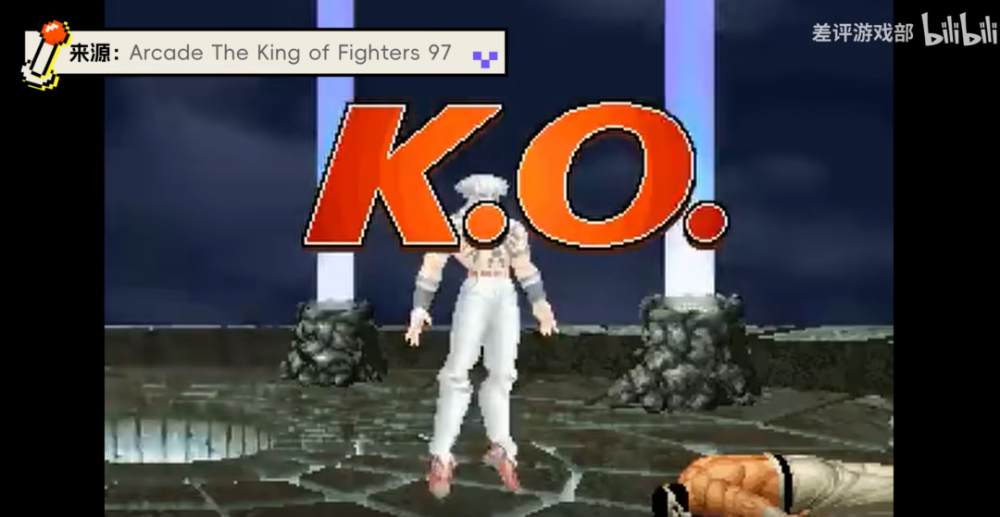
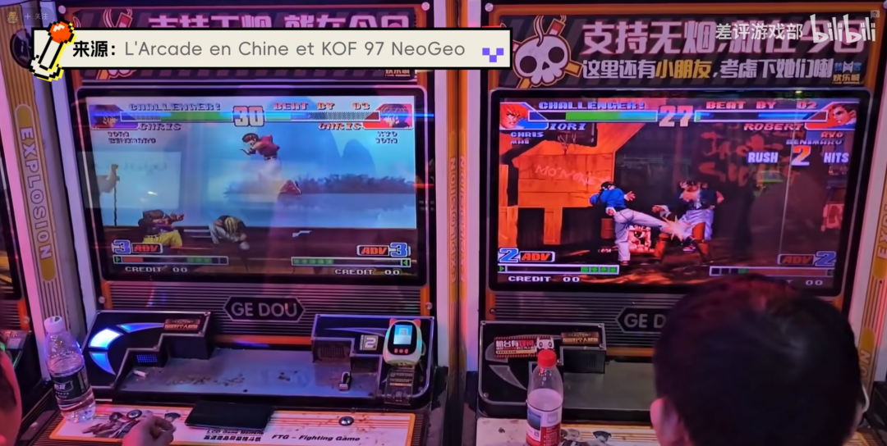
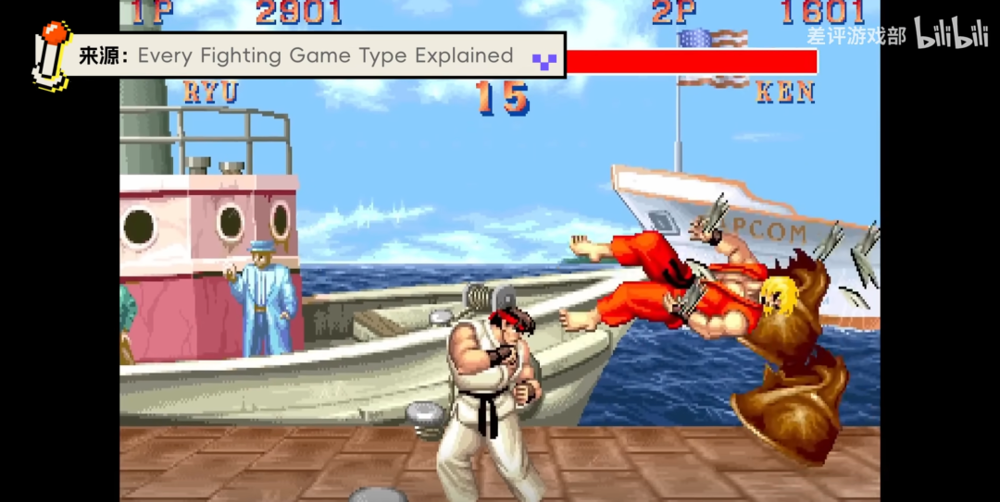
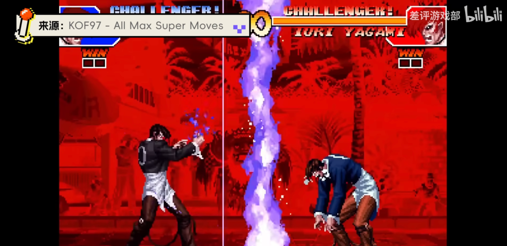
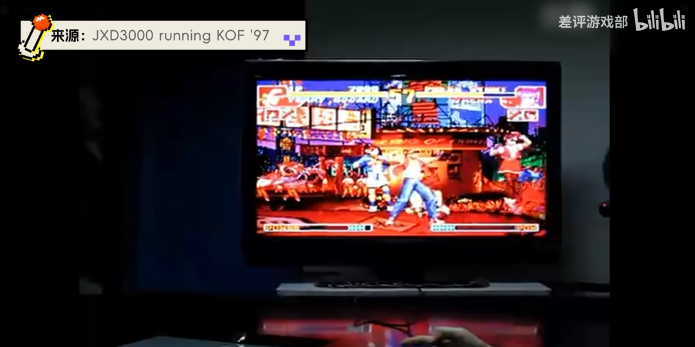
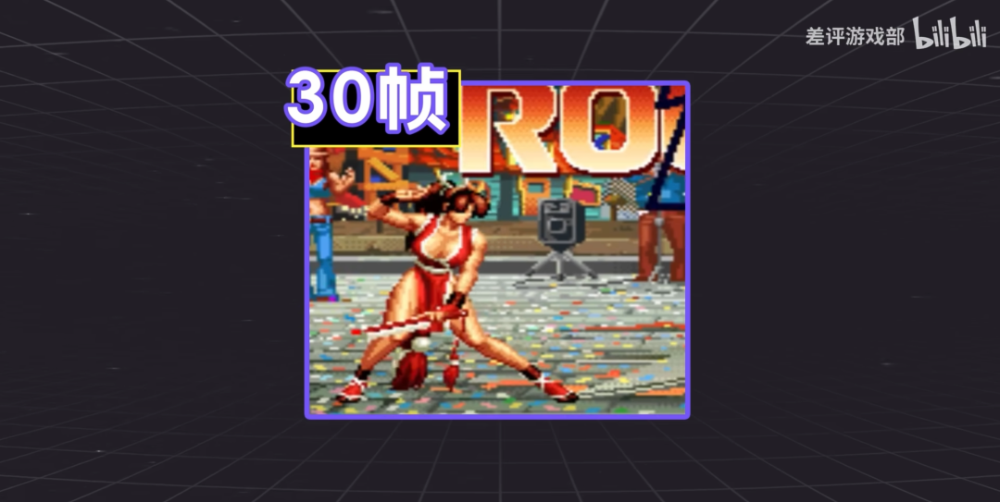
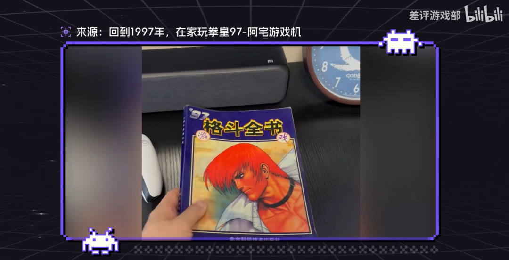

雖然賽道截然不同，但都 2025 年了，《拳皇97》在中國的生命力，依然絲毫沒有減弱。
許多老玩家小學逃課去街機廳打 97 ，現在二胎都打醬油了。
發現街機廳小學生居然還在打 97，不知今夕是何年。
可能最近街霸比賽看多了，刷到了不少格鬥視頻，關鍵《拳皇97》頻繁出現，搞得我還挺疑惑的。
所以不如干脆來暴露年齡聊一聊。《拳皇97》為什麼能在中國火爆20多年，橫跨了老登，中登，小登三代玩家依然沒被遺忘。
大家好，這裏是小學放學就去街機廳的差評遊戲部，今天咱就盤盤，拳皇 97 給中國玩家打下的思想鋼印，到底是SNK的無心之舉，還是時代使然。
大夥都知道，拳皇 97 在國內爆火主要源自當年的街機廳。但嚴格來説，拳皇 97 的成名之路也不是一蹴而就的。
背後涉及到時代特性，拳皇曆史，以及玩家喜好各種原因。咱一個一個聊，其實自打 90 年代中國改革開放基本完成，街機廳老闆就能通過廣港澳台的這些國內的對外港口，搞到各種街機機台。
所以嚴格來説並不是 97 特殊，而是那個年代但凡是點牛逼的街機，多少都在國內街機廳輝煌過。
比如闖關類的《 吞食天地 》，《 名將》 ，《 恐龍新世界 》，打飛機類的《 1942 》，《 四國戰機 》，《 武裝飛鳥 》。不過要説最受街機廳歡迎的，必然還是格鬥遊戲。因為格鬥遊戲無論對街機廳老闆還是玩遊戲的玩家，都有獨一無二的吸引力。
比如從老闆來説，格鬥遊戲一局時間短，兩人打一分鐘就結束，而且總有一個輸的人要投幣。這就讓格鬥遊戲的投幣率比傳統遊戲高不少。
當時街機廳有不少能一命通關各種遊戲老油條，幾個人湊錢買幣，就能霸佔機台一下午，老闆除了給遊戲偷偷上調難度幾乎沒有限制方法，但格鬥遊戲卻天然解決了這個問題。

同時，格鬥機台佔地也小，兩人打很容易吸引圍觀羣眾，就又增加了街機廳的人氣。所以搞幾台最火的格鬥機台，對街機廳老闆就是一本萬利。

而對於玩家，格鬥遊戲就更特別了，因為格鬥遊戲多了傳統遊戲沒有的對抗屬性，
刺激感遠超同類遊戲，而且贏了不僅有面子加成，還不用投幣，正反饋直接翻倍。哪怕輸了，好勝心一激起來，又是一個不眠之夜。
假如你後來又戰勝了老對手，那爽感更是爆炸，不亞於三伏天進空調房，舊衣服掏出零花錢，綠玩單挑贏掛哥，贏一次能記一輩子。

所以自打 90 年代 SNK 、卡普空這些日本大廠把注意力轉向格鬥遊戲，全球，包括中國街機廳都幾乎成了格鬥遊戲的天下。
像是 90 年代初的《 街頭霸王 》，中期的《 鐵拳 》，拳皇的前輩《 餓狼傳説 》等等。
這就有一個問題，既然當年大作頻出，怎麼最後就讓 97 稱霸了？難道 97 質量真就比這些遊戲更高？這背後就涉及拳皇 97 和中國街機廳的特性了。
如果你也是個老玩家，大概也知道，97 的問題其實並不少，比如平衡性爛，BUG多，開發趕工，很多角色都有無限連或賴招，放現在可能都很難稱上一款合格的競技遊戲。
但神奇的是，或許正是因為這些缺陷，才讓 97 在中國大火，讓無數玩家至今依然沉迷。

97 之前，街機廳最火爆的遊戲其實是《 街頭霸王2 》。可以説自打《 街霸2 》引入國內後，格鬥遊戲才像病毒一樣四散全國。
但隨着時代發展，《 街霸2 》也漸漸出現了一些問題。首先就是玩法僵化，《 街霸2 》雖然首次把 1v1 的格鬥玩法推向了大眾，但節奏依然較慢，遊戲沒有跑、 dash 這種快節奏系統。
跳也只有大跳一種，所以絕大多數玩家都只能主打一招一式的立回和波升。
除了發波不推前，你跳我就升龍拳的口號就是在此誕生。而且每局遊戲 100 秒，説長吧也還好，但問題是角色招式不多，一開始還有新鮮感，但連續看幾年多少有點煩悶。

而《 拳皇 》系列，卻針對這些痛點都做了全面革新。
首先就是提速，《 拳皇 》的第一部《 拳皇94 》裏就加入了 DASH 系統，還把 100 秒對局，縮到了 60 秒。同時為了豐富體驗，遊戲採用小隊作戰，一次能選三個人，這對寸幣寸金的小學生羣體吸引力極大。
到了 96 ，遊戲又加入了小跳和跑步動作，遊戲節奏又一次加快，而這種加強在 97 達到了一個階段性的巔峯。現在看，《 拳皇97 》的比賽節奏是非常誇張的。
角色血條非常短，招式傷害奇高，一個大招下去，就能給對手幹到半血。哪怕你和後來的《 98 》《 99 》對比，都會發現《 97 》的對局節奏要快很多。而這，直觀上就讓玩家感覺遊戲很非常爽快。
而且大夥可能不知道，最早的《 街霸2 》是完全沒有大招機制的。
但《 拳皇 》不僅有大招，還分為必殺技和超必殺技，很多人看不懂什麼立回，連招，但必殺技有特寫，傷害高，效果酷炫，幾乎人人都看懂，而看懂可太重要了，
這意味着大大降低了圍觀羣眾的觀看門檻。
而如果你上手在實戰中發出來，滿足感也非常強。你可能會問，那拳皇 95 96 也有大招，怎麼就沒 97 那麼火？其實這也益於97的一個缺點，沒錯，缺點！
那就是出招模糊。
當時 SNK 在開發 97 時，因為核心骨幹中途離職，導致開發緊張，新上任的製作人田邊豐壽，雖然依舊堅定拳皇要走爽快的路線，卻對平衡性把握不夠，很多招數的輸入窗口都沒有細緻調試，導致一些本應該有輸入門檻的招式，隨便一搓就能發出來，完全變成了零門檻。
比如特瑞的這招，輸入表是 426 ，在 96 裏你只能老老實實搓，不算特別難，但放進連招裏還是有門檻的。
但在 97 裏，那就簡單多了只要快速推1和6，就能隨便發，屬於是古早版現代模式。
當然這其實算一個 BUG ，所以 98 裏，田邊也立刻做了修改，但很多 97 入坑的老玩家反而不適應了。因為這讓遊戲從一個大眾遊戲，變成了一個高手遊戲。
而且早年的格鬥遊戲那是真的硬核。過個劇情 boss 都得費老鼻子勁。雖説格鬥遊戲本身就是偏硬核的品類，但不得不説，在上世紀遊戲普遍硬核的年代。 97 因為遊戲 bug ，反而變成了爽遊，對於接觸遊戲不多的國內玩家，確實有着極強的吸引力。
不過，這些問題也導致 97 平衡非常爛，無限連的招式奇多，還很多難解的賴招。可這些，都被充滿智慧的我國老百姓，用村規一一解決了，比如必殺技好發，那就禁裸殺，無限連太賴，那乾脆不讓用。
不同街機廳，根據當地玩家的技術水平，也有不同的村規。某種意義上實現了動態平衡，哪怕完全不遵守，格鬥街機的性質，也是贏家不用投幣，輸家立刻滾蛋。
所以角色越賴，越好用，在沒有太多比較的 90 年代街機廳裏反而更吃香。而且畢竟都屬於民間切磋嘛，當時國內也沒有什麼成熟的比賽，那就自然能賴一局就快樂一局，實在不行就加入唄，主打一個比賽第一，公平第二，友誼沒有。
當然，隨着街機廳線上格鬥轉成線下真人格鬥的頻率越來越多，為了保護自己和他人的身心健康，更多人還是選擇遵守村規，維護街機廳秩序。
而另一方面，97 也不是隻有缺點，他的很多優點，在另一個層面也助力了火爆趨勢。
首先是系統，97 在系統上增加了一個 ADV ，也就是隨着打人和被打自動增加能量氣槽，關係好的角色還能隔局繼承氣槽，這個設計就非常現代化，讓玩家在戰鬥中需要隨時計算氣槽，陷入劣勢也有一定資本翻盤，讓比賽充滿變數。
這套系統頗受好評，也被繼承了下來，在後續的拳皇作品中，逐漸替換了老的“蓄力”系統。甚至如今大多數其他格鬥IP，也是在這套系統上做了各種變體。
某種意義上，給整個遊戲品類都帶來了革新。
其次，《 拳皇97 》作為“ 大蛇篇 ”的終章，劇情也十分精彩。
雖然現在都説格鬥遊戲誰看劇情啊？但放在當年，因為缺乏主機土壤，國內玩家接觸遊戲類型不多，一款遊戲有沒有單人劇情，劇情是不是精彩，直接決定了玩家對它的印象是好還是壞。
巧的是《 拳皇97 》就是當年劇情最精彩的一代《 拳皇 》遊戲裏代表地球意志的大蛇試圖從古老的封印中解脱，準備消滅人類。
而拯救人類的重任，落在了當年封印大蛇的三家族後裔。也就是草薙京，八神庵和神樂千鶴。在比賽中，三人還會遇到試圖復活大蛇的新面孔隊，它們利用比賽吸收選手的生命能量，最終在一定程度上，復活了大蛇。
而且因為大蛇非常強大，勢不可擋，還能用力量控制擁有大蛇之血的八神庵和莉安娜，就讓整個故事在中段多了一層反轉和懸念。陰謀，熱血，跌宕起伏的發展，現在看可能有點俗套，但放在當年可謂相當精彩。
遊戲裏各種細節，也在襯托故氛圍。像莉安娜暴走的地圖，背景是歡樂的節慶，就是製作組刻意反襯暴走狀態下的兇險。
在單人通關後，根據選擇的不同隊伍，遊戲也會有不同的結尾。而且因為田邊在當製作人之前是美術出身，所以 97 的 PPT 演出也是 2D 拳皇曆代最精細，長度最長的。
基本上只要看完劇情，新玩家就能直觀感受八神的冷傲，草薙京的帥氣自信，大蛇的壓迫感，角色的魅力呼之欲出，加上《 拳皇 》的人設本來就比街霸等其他格鬥遊戲裏偏西式角色更時髦，更東方。貼近中國玩家的審美，熱度也就自然蓋過了其他遊戲。
像後來《 98 》完全沒有劇情， 99 因為種種原因劇情熱度也不高，就沒有太多人記住，印象最深的還是《 97 》畫面這塊，還有個挺有意思的小趣聞。
當時 SNK 負責角色動畫的美術是個完美主義者，所以他給不知火舞做動畫的時候，一不小心做過火了，什麼乳搖，扭臀加一起做了足足 30 幀，本來 97 的工期就緊，田邊看到後差點崩潰，大罵“ 你瘋了嗎？做這麼多幀數，機器頂不住啊 ”。只能隨便刪掉一部分，告訴美術要分清輕重緩急。

最後，還有一個客觀要素讓 97 大幅傳播，就是破解和盜版。
97 採用的是 SNK 自研的 MVS 基板，這個基板早在 1990 年就研發出來了。
它的優點是製作成本低， ROM 容量大，可以呈現當時看很精緻的畫面。但缺點卻是幾乎沒有加密。當年不少盜版廠商就是鑽研紅白機 ROM 出身，對這種沒有防備的基板，簡直是手拿把掐。
有的街機廳老闆可能曾經就是焊工或者電工，自己都能給主板改個電路，調整一些遊戲內容，什麼無限能量的《 97 》，取名叫《 風雲再起》 ，直接改出隱藏角色等等等等，都讓 97 ，通過盜版的方式反覆出圈。
其實同理還有卡普空早期用的 CPS 基板，也只有少量加密，所以街霸2火過一段時間。但後來卡普空陸續升級出 CPS2 和 CPS3 ，加入了正經的加密系統，國內街機廳就沒轍了。後來的 1 2人《街霸2》，《街霸3》，幾乎在國內絕跡。
到了 2000 年後，SNK和國內街機廳也同時開始衰落，前者是因為主機業務受挫導致財務危機瀕臨倒閉，後者則是因為電子遊戲禁令，遭到了嚴打，大量小型街機廳關門。本來《 拳皇99 》之後，系列基台的出貨量就低，國內渠道再進不來，續作就更沒法更新了。
而《拳皇97》，恰好得益於諸多優點，依然堅挺，甚至因為 MVS 基板和主機版本用的是同一個 ROM ，可以直接用模擬器拷貝到電腦上玩，所以國內電腦普及之後，97 也跟着一塊普及了，直到今天都餘温未消。
各種對戰平台依然會將 97 作為懷舊區的頭牌之一，對它進行網絡化改造，加入在線匹配，天梯等功能，讓當年街機廳沒結束的恩怨，在線上繼續。當年民間的 97 大佬，現在也有機會在網上展示實力。
就連 SNK ，都在 18 年把 97 登錄 STEAM ，加入了各種現代化功能，試圖讓這款老遊戲重獲新生。
當然，作為一個距今近 30 年的老遊戲，《97》無論如何改造，都沒法和各種新遊同台競技。但它卻能給很多結了婚、有孩子，揹負着工作家庭壓力的老玩家一個去處。他們沒時間玩遊戲，也沒精力瞭解新遊戲。
所以看似過時的《 97 》對他們依然重要。它門檻簡單，玩法爽快，畫面落伍但依然華麗。在直播間有主播比賽看，要討論交流有貼吧，小羣。
想玩了，對電腦配置沒要求，打兩把也不花時間，能夠隨時停下哄孩子。偶爾還能當成親子互動，和下一代找找僅有的共同語言，甚至做做遊戲啓蒙，打格鬥從娃娃抓起。
所以哪怕如今玩的人並不多，這些也都足以讓 97 的生命力延綿不絕。

説到底，《 拳皇97 》在中國如今的地位，絕不單單因為遊戲質量，而是遊戲本身，時代背景，和玩家生態共同促成。
它更像一種....隨着時代逐漸開放，人們尋求更豐富娛樂生活時期的文化符號。
所以可能很多玩家懷念《 97 》也不只是懷念這款經典遊戲本身，而是在懷念那個曾經放學去街機廳裏，無憂無慮，大家圍在一起罵街，投幣，鑽研無限連的生活。
就像曾經負責過拳皇老系列音效設計的麻中秀樹在一個時隔 20 年的採訪中説，他經歷過 SNK 的破產，又經歷過 SNK 的重組，這讓他覺得一切好像是夢，因為 20 年前的他，做夢也想不到拳皇系列能出到今天。
而經歷過那個年代玩家來説，這 20 年多年的時光又何嘗不是夢呢。畢竟20年前我們做夢也想不到， 2025 年的今天還有人在打《 拳皇97 》。
也無法料到，當年離開街機廳的，可能只是年輕的我們。
而《 拳皇97 》留下的那段美夢，其實從未離開。